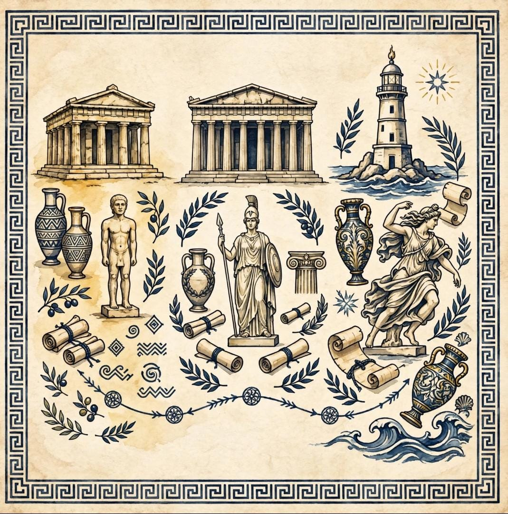

OlympoVou compartilhar sobre a grecia antiga sua historia e mitologia.
A cronologia da Grecia Antiga se articula por meio de um processo evolutivo complexo, tradicionalmente segmentado pelos historiadores em cinco grandes fases que ilustram o nascimento, o apogeu e a posterior transformacao da civilizacao helenica. Tudo se inicia no Periodo Pre-Homerico, marcado pela formacao do povo grego e pelo esplendor das culturas minoica e micenica, cujo colapso e subsequentes invasoes doricas provocaram uma severa desestruturacao social. Essa crise conduziu a regiao ao Periodo Homerico, uma epoca de intensa ruralizacao e de organizacao comunitaria baseada nos genos, cujas memorias e tradicoes foram imortalizadas nos poemas epicos de Homero. A medida que essas comunidades cresceram e se transformaram, emergiu o Periodo Arcaico, caracterizado pelo nascimento da polis como modelo de cidade-estado e por uma expansao colonial que espalhou a cultura grega por todo o Mediterraneo. Esse amadurecimento estrutural abriu caminho para o Periodo Classico, considerado o apice civilizacional grego, onde Atenas e Esparta polarizaram o cenario politico atraves de conquistas democraticas, florescimento filosofico e grandes conflitos, como as Guerras Medicas e a autodestrutiva Guerra do Peloponeso. O enfraquecimento decorrente dessas disputas internas permitiu a ascensao do Imperio Macedonico, inaugurando o Periodo Helenistico, que difundiu a fusao das culturas ocidental e oriental sob o comando de Alexandre, o Grande, ate que a regiao fosse finalmente integrada ao Imperio Romano.